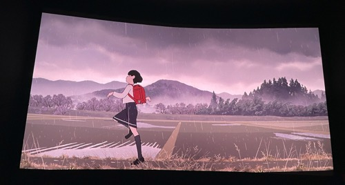

InitialDの後継作として、MFゴーストはまたそういう下剋上キャラを主人公にします。しかし、MFゴーストのレースはJDM同士の闘いではないので、もちろん８６GTはPORSCHEやFerrariのライバルの訳ではない（せめてSupraにしろ、でもそれすらNurburgringで９１１GT３RSとのラップの差は1分ほど）。しかし、ドライバー同士の角度に見ると、片桐カナタのいくつの神技は現実的な参考が確かにあります（当然おげさだ）。まずは雨の中のドライビングは他の選手と比べて優れているということだ。これを観た時、Verstappenの２０１６年そして今年のBrazil GPの素晴らしいパフォーマンスを思い出した。あとは片桐のその超人な記憶力だ。以前、とあるF１に関しての番組（Grill the Grid、多分）、Checo（F1 driver）Perezは目を隠すながらとあるサーキットを攻略するというチャレンジを見事にクリアした。
原作の中には一番印象深いのシーンは、藤野は京本の家を初めて訪ねたあとの家帰りの途中に、雨の中で踊って走るというシーンです。見開きの1コマで、藤野のその自分の努力を認められる嬉しさを十分表現した。しかし、アニメのほうは、こういゆ決めシーンの代わりに、藤野の嬉しさは一連の動きで表現した。作画の角度としては、まあそれはいいと思いますが、インパクトはまだ足りないんです。人や物を動かすというのはアニメのいいところですが、それは最終目標じゃなく、ただ一種類の表現手段だと思います。

不正解は無意味を意味しませんっていうのはPRLのレフリーにも言いたいことです。😅